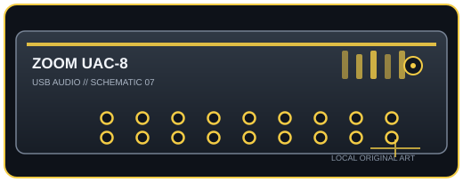

[ INDIVIDUAL COMPONENT // SOUND ]
Zoom UAC-8
A high-channel-count rack interface built around USB 3.0, with eight combo inputs, digital expansion, and onboard monitoring.

IDENTIFICATION: Manufacturer/model: Zoom UAC-8 USB 3.0 audio converter. Verify the full model and hardware/firmware revision on the unit; similarly named generations may have different ports, drivers, or channel counts.
Specifications
| Catalog subcategory | USB audio interfaces |
|---|---|
| Model / SKU identity | Zoom UAC-8 USB 3.0 audio converter; model-level identity, not a retailer bundle SKU. |
| Analog, digital I/O and host channels | 18-in/20-out total: eight analog XLR/TRS combo inputs, ten analog line outputs, optical ADAT/S/MUX or S/PDIF digital I/O, and MIDI DIN. Optical channel count varies with sample rate and selected mode. |
| Conversion, sample rate and bit depth | 24-bit; 44.1, 48, 88.2, 96, 176.4, and 192 kHz. Higher-rate ADAT operation uses channel multiplexing and carries fewer channels. |
| Mic preamps / phantom power | Eight combo mic/line inputs with dedicated gain; +48 V phantom is available in two groups (inputs 1–4 and 5–8). Observe the group-level switching when connecting microphones and line gear. |
| USB generation / class compliance | USB 3.0 SuperSpeed Type-B interface. A USB 3 host/cable is required for the full multichannel configuration; operation on a slower connection may reduce functionality or be unsupported. |
Drivers, host compatibility & latency
- Zoom provides host drivers/control software for supported Windows and macOS releases; class-compliant iOS mode is documented for supported setups. Verify exact OS/firmware and powered-adapter needs before deployment.
- The onboard mixer enables low-latency direct monitoring, but software round-trip latency depends on driver, sample rate, buffer, and host load. At high channel counts, USB 3 cabling and system stability are especially important.
- For predictable recording, match the interface and DAW sample rates, select the model-specific manufacturer driver where required, test the intended buffer under real session load, and retain a higher-buffer fallback for dense projects.
Identification and preservation notes
Photograph the underside model label and connector panel; record serial/model identifiers, revision, firmware, included power supply, optical mode, and installed driver version. Do not infer channel count or supported sample rate from a connector or product-family name alone.
Sources & further reading
- Zoom — UAC-8 product pageManufacturer model page with published UAC-8 features and specifications.
- Zoom — UAC-8 Operation Manual (PDF)Manufacturer operation manual covering connection, drivers, modes, and technical data.
Manufacturer documentation is the authority for exact revisions and supported hosts. Verify regional SKU and operating-system support against the physical unit.